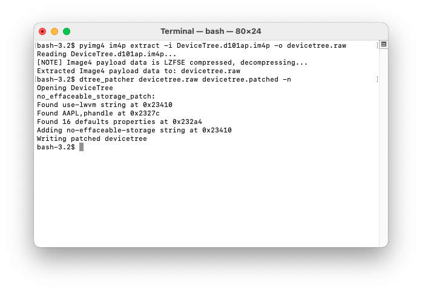

no-effaceable-storage
Dual booted OS is almost ready to boot, we just need to generate a keybag or copy it. If you choose to copy it, you won’t be able to set a passcode, if you’ll do it, effaceable keys will be regenerated and first OS won’t boot anymore (so you’ll need to restore the device).
cp -av /var/keybags /mnt2
If you choose to generate it, continue here.
Patching devicetree
We have to add no-effaceable-storage property.  Check "use-lwvm" property and add no-effaceable-storage property above it. I replaced “supported-legacy-panic-flow” instead of adding it, but it’s better adding it.
I replaced “supported-legacy-panic-flow” instead of adding it, but it’s better adding it.
Adding fixkeybag
Thanks to @nyan_satan for this technique. We’ll make our keybag generate when booting for first time: compile fixkeybag for arm64 and put it in / of disk0s1s3 (don’t forget to sign it using ldid for iOS 10, ldid2 for iOS 11+). Save original keybagd, sign fixkeybag and replace it with fixkeybag
mv /mnt1/usr/libexec/keybagd /mnt1/usr/libexec/keybagd_bak
mv /mnt1/fixkeybag /mnt1/usr/libexec/com.apple.keybagd
ldid -S /mnt1/usr/libexec/com.apple.keybagd
mv /mnt1/usr/libexec/com.apple.keybagd /mnt1/usr/libexec/keybagd
Second system is ready to boot. Now we have to patch bootchain and boot it.